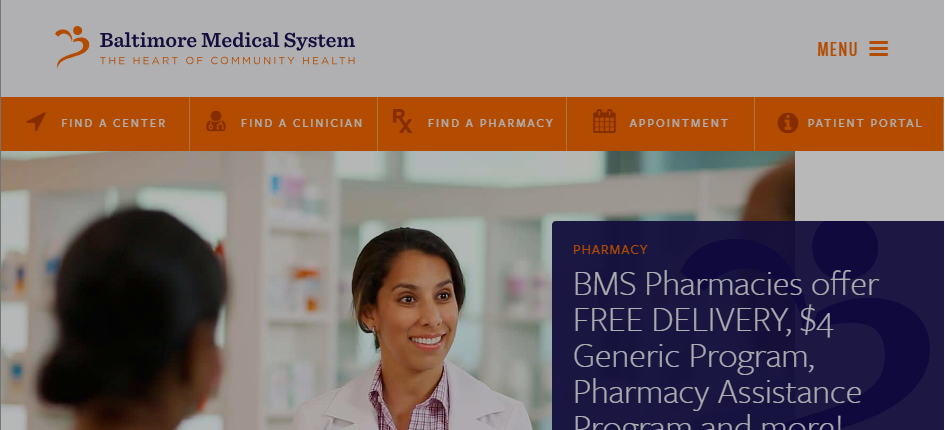
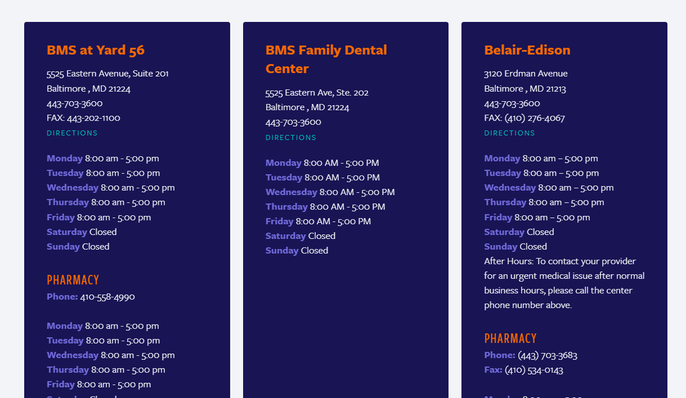
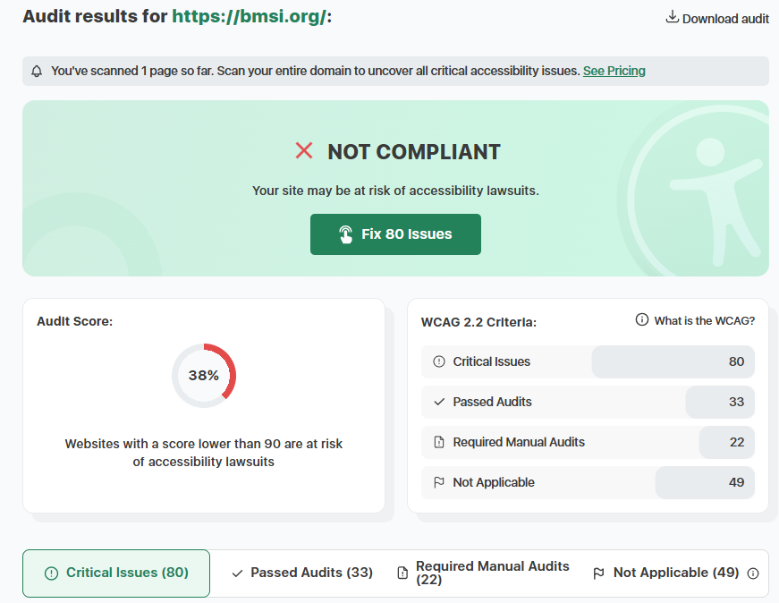

Questions:
1) What is the URL of the website?
https://bmsi.org/
2) What is the name of the website?
Baltimore Medical System
3) Who is the site's target audience?
Patients, healthcare providers, and the general public interested in healthcare services in Baltimore.
4) How is the site organized?
It is organized using hierarchical orientation. The site is organized with a main page then tabs that go into several main sections, it includes "Find a Center," "Find a Clinician," "Find a Pharmacy," "Appointments," and "Patient Portal." Each section contains relevant information and resources for users. The navigation menu is clear and easy to use, allowing users to quickly find the information they need.

5) Which CRAP Design Principle does the use? Provide at least one example.
Proximity: The "Find a Center" page uses proximity by grouping the name, address, phone and fax number, hours and direction button together for each specific location. This visual grouping tells the user that these elements are related to one specific clinic.

6) What is the Audit Score according to the Accessibility Checker?
According to the Accessibility Checker, the website has an audit score of 38 out of 100, indicating that it has significant accessibility issues that need to be addressed and may be at risk for lawsuits.

7) What is the site's effectiveness? Does it support users in completing actions accurately?
I would say this site's effectiveness is low moderate. It provides clear navigation and relevant information, but some users may find it difficult to locate specific resources or complete certain actions due to the site's layout and design. Additionally, the accessibility issues may hinder some users from fully utilizing the site.
8) What is the site's efficiency? Can users can perform tasks quickly?
The site's efficiency is Low Efficiency. While the navigation menu is clear and allows users to access different sections, I can see there are a lot of scripts running for this website that make the loading time slower.
9) How is the engagement? Is it pleasant to use and appropriate for its industry/topic?
The engagement is appropriate but inconsistent. The color palette and layout feel professional and trustworthy for a healthcare provider. But, I notice some technical glitches, lag and disappearing boxes upon entering the website creating a sense of frustration that makes the experience less pleasant than it should be.
10) Make at least one recommendation to improve this website based on what you learned in this module.
Some recommendations to improve this website would be to address the accessibility issues identified in the audit, fix the slow loading times, some of the glitches and avoid hard to read text and colors.
Resources Used
My personal notes on how to bold text inline and Professor Veronica Noone feedback from Lab 05:Layout